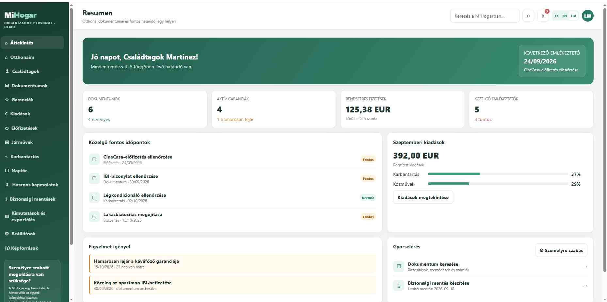

VÁLLALKOZÁSOKNAK
ELÉRHETŐ BEMUTATÓ
CRM vállalkozásoknak és szakembereknek

Bemutató alkalmazás ügyfelek, munkák, árajánlatok, dokumentumok, költségek, feladatok és utánkövetés rendszerezéséhez. A felépítés szolgáltató cégekhez, egyéni vállalkozókhoz és kisebb csapatokhoz is igazítható, szakmától függetlenül.
✓ Ügyfelek, munkák és árajánlatok✓ Dokumentumok, költségek, feladatok és utánkövetés✓ Az adott tevékenységre szabható funkciók
MAGÁNSZEMÉLYEKNEK
ÚJ BEMUTATÓ
MiHogar Digital

Személyes rendszerezőprogram a háztartás fontos adatainak egy helyen tartására: otthonok, családtagok, dokumentumok, garanciák, kiadások, előfizetések, járművek, karbantartások, javítások és fontos határidők kezelésére.
✓ Helyben, a számítógépen működik✓ Nem igényel webtárhelyet vagy kötelező havi díjat✓ Az adatok a felhasználó saját gépén maradnak
APARTMANKEZELŐKNEK
ÚJ BEMUTATÓ
MiApartamento Digital
Rendszer apartmanok, foglalások, vendégek, érkezések és távozások, takarítások, kulcsok, karbantartások, kiadások, dokumentumok és feladatok egy helyen történő kezelésére.
✓ Több apartman átlátható kezelése✓ Foglalások, vendégek, takarítások és kulcsok rendszerezve✓ Kiadások, dokumentumok, feladatok és kimutatások egy rendszerben
MAGÁNSZEMÉLYEKNEK
ÚJ BEMUTATÓ
MiCasa Digital
Otthoni rendszerezőprogram a lakás és a család fontos adatainak egy helyen tartására: dokumentumok, garanciák, kiadások, előfizetések, járművek, karbantartások, naptári teendők és biztonsági mentések kezelésére.
✓ Az otthoni információk rendezve és könnyen megtalálhatók✓ Dokumentumok, garanciák, kiadások és emlékeztetők✓ Biztonsági mentés a felhasználói adatok megőrzéséhez
TOVÁBBI LEHETŐSÉGEK
Új rendszerek más igényekre.
Ez a rész később más vállalkozói területekre készülő megoldásokkal és új lakossági programokkal bővíthető. Minden projekt azokból a valós feladatokból indul ki, amelyeket a felhasználó rendszerezni szeretne.